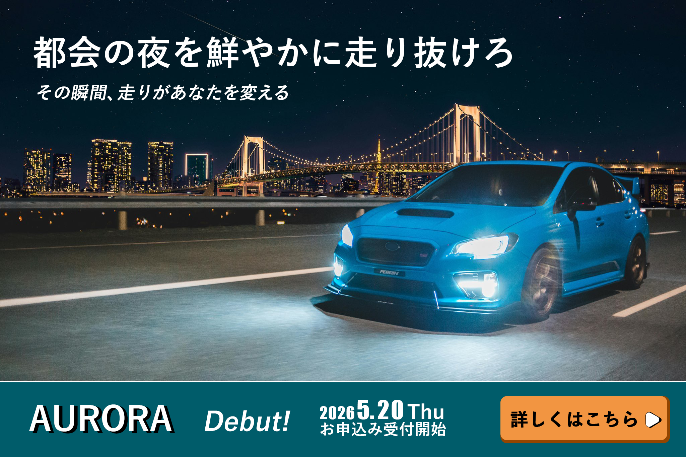
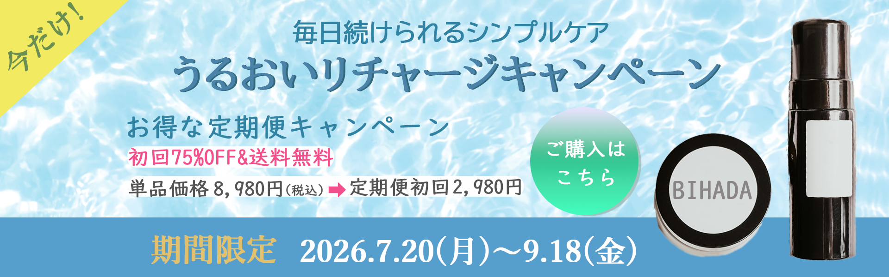
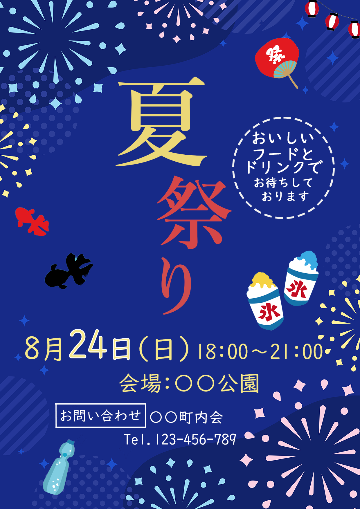

PROFILE
下重 朋也
経歴
家具販売の営業・接客を経験し、顧客のライフスタイルに合わせた提案やチームマネジメントに携わりました。
現在は独学でWebデザインを学習中で、Photoshopを中心にバナー制作やLPデザインを制作。
HTML/CSSを用いたコーディングの基礎も習得しています。
自己PR
私の強みは「相手の課題を引き出し、解決に導くコミュニケーション力」です。
前職ではヒアリング力と提案力を活かして成果を上げ、チーム全体の改善にも取り組みました。
今後はこれらの強みを活かし、クライアントの要望を正確に理解した上で、成果につながるデザインを提供していきたいと考えています。
My skills
デザイン
- Photoshop：大学で学習。バナー制作、LPデザインの制作経験あり。写真補正・文字組み・色彩調整が可能
- Illustrator：大学で基礎を学習（ロゴ・アイコン制作の基礎知識）
コーディング
- HTML & CSS：基礎を習得。簡単なWebページを作成可能
オフィスツール
- Word：MOS（Microsoft Office Specialist）ベーシック資格を取得済み
3DCG
- Maya：大学で2年間専攻。モデリング基礎を学習（静止画作品あり）
できることリスト
【制作した作品一覧】
作品名:車販売のバナー
作品名:車販売のバナー横長ver

作品名:美容液販売サイトバナー

作品名:美容液販売サイトバナー横長ver
作品名:夏祭り告知バナー
作品名:夏祭り告知バナー横長ver

作品名:カフェLPデザイン

作品名:カフェLPデザイン横長ver

作品名:Cafe Lento LP
 Webページを見る
Webページを見る
Finally
最後までご覧いただきありがとうございます。 まだまだ成長の途中ですが、デザインを通じて皆さまの課題解決や理想の実現をサポートしていきたいと考えております。
どうぞよろしくお願いいたします。